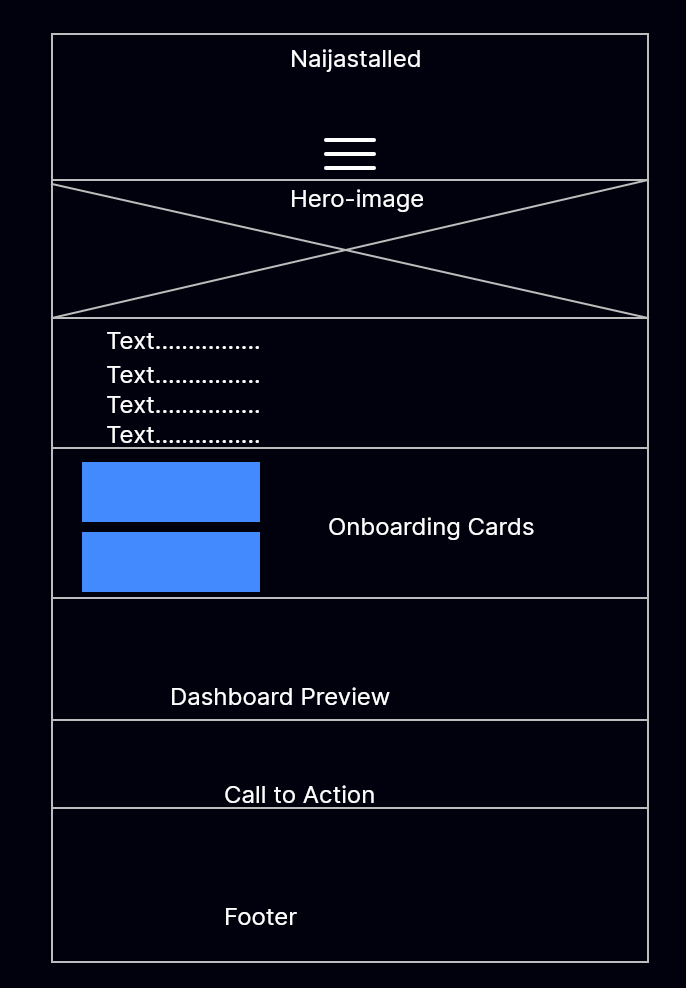
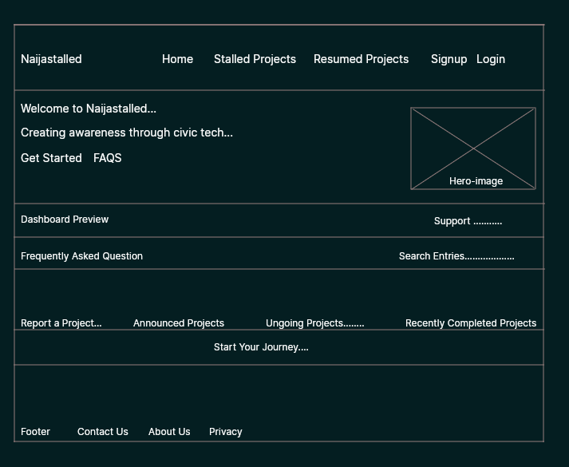

Site Name
Naijastalled
Description of Planned Content The website will document abandoned, unfinished, and neglected public projects across Nigeria. Each project will have information such as its name, location, original purpose, estimated history, current condition, photographs, and available information about its abandonment. The website may also organize projects by state, project type, and status, with maps used to show their locations.
Optional Domain: naijastalled.com
Site Purpose
Naijastalled documents abandoned, unfinished, and neglected public projects across Nigeria.
Reason for Selecting the Subject I like civic tech, so I selected this subject because Nigeria has many abandoned and unfinished public projects whose stories and current conditions are not well documented in one accessible place. I am interested in using technology to make this information easier to discover and understand. The project could also be expanded into a larger public-interest platform for documenting infrastructure and preserving information about projects across Nigeria.
Target Audience
- Federal Government
- State Governments
- Civic Organizations
- Researchers
- Journalists
- General Public
Visitor Scenarios
- How can I contribute information about an abandoned public project?
- Can I track the status of an abandoned public project?
- Which states have the most abandoned public projects?
- How do I know if a public project is abandoned?
Website Features
- Project documentation and information sharing
- Search and filtering capabilities
- Map-based location visualization
- User-generated content submission
- Project status updates and notifications
- Community engagement and discussion forums
Color Scheme
| Color | Hex Code | Usage |
|---|---|---|
| Warm Amber | #D97706 | Buttons, badges, highlights |
| Dark Blue | #1A365D | Navigation, links, headings |
| White | #FFFFFF | Main background |
| Light Gray | #F1F5F9Cards and section backgrounds | |
| Dark Slate | #1E293B | Footer and emphasis sections |
Typography
| Font | Usage |
|---|---|
| Poppins | Headings and section titles |
| Open Sans | Body text and paragraphs |
| Montserrat | Buttons, badges, and call to action text |
CSS
The website will use responsive CSS to create a clean, modern, and mobile friendly user experience. Styles will implement the selected typography, color scheme, spacing, cards, buttons, and responsive layouts.


Testing
- W3C HTML Markup Validator
- WAVE Web Accessibility Evaluation Tool
- Google PageSpeed Insights
- Chrome Lighthouse
- WebAIM Color Contrast Checker